Apple
A short overview of our method and results.
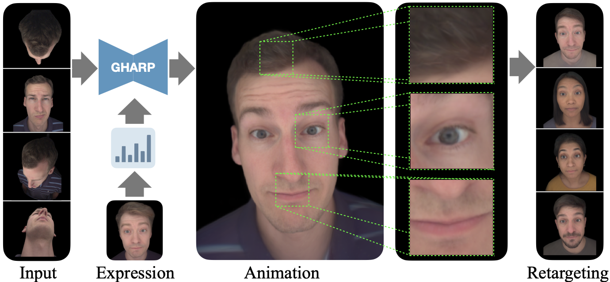
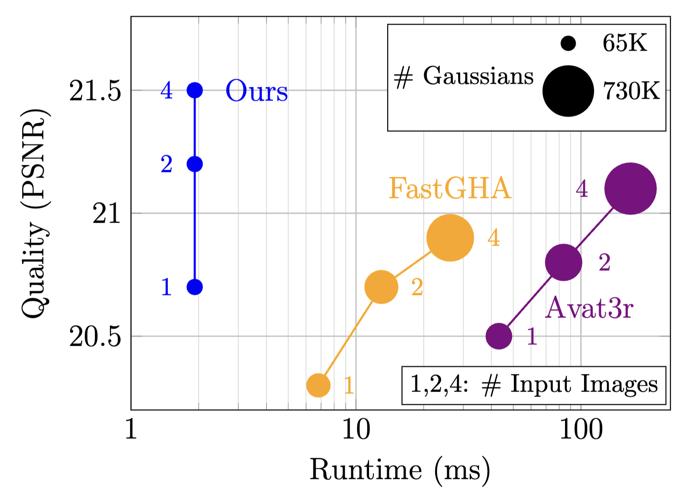
We present GHARP (Real-time Gaussian Head Animation from Large-scale Reconstruction Prior), a method that animates 3D human heads in real time from a few input images of a subject and a driving expression signal. We decouple the problem into an identity stage that builds a representation of the subject's geometry and appearance offline, and an animation stage that predicts expression-dependent residuals on top of it at runtime. This separation offers a favorable tradeoff with respect to fidelity, quality and runtime: the identity stage can be expensive while the animation stage runs a lightweight network, optimized for mobile devices. Our method performs animation in a semantically structured latent space of a pretrained reconstruction model, where expression changes remain spatially contained, making residual prediction efficient. This reconstruction prior provides a consistent spatial layout, allowing fusion of multiple input views into a compact, fixed-size canonical Gaussian representation. While this two-stage design solves the runtime–quality tradeoff, it still inherits a problem common to all expression-driven avatar methods: expression codes describe only the face and thus omit body pose and clothing position, making these regions underspecified in the input. The animation network faces an ill-posed mapping and resorts to averaging over conflicting body appearances, producing blur and temporal flicker. We address this with a body alignment network that learns to align the person's body in the target image with the input reference images, removing the ambiguity from the training signal. Our method achieves state-of-the-art quality on the Ava-256 benchmark while running up to 13× faster on an A100 GPU with 8× fewer Gaussians.
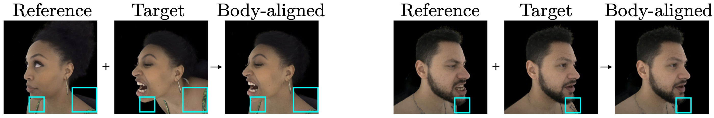
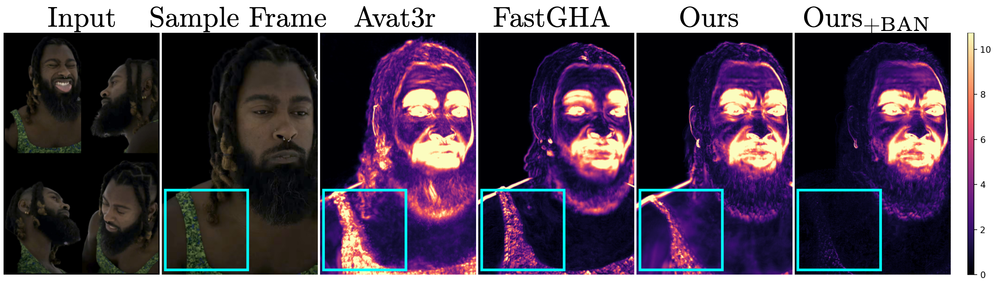
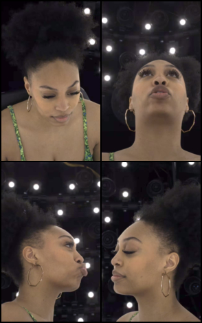
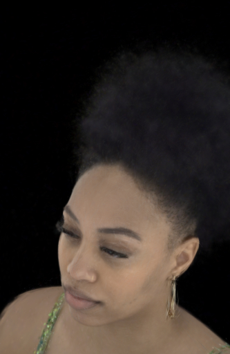
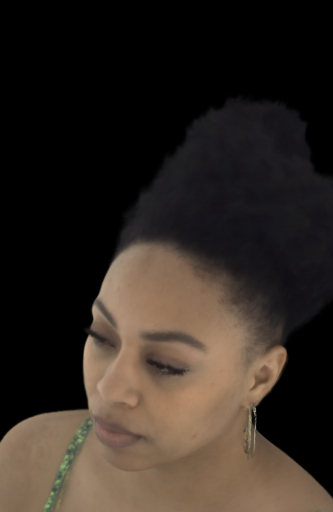
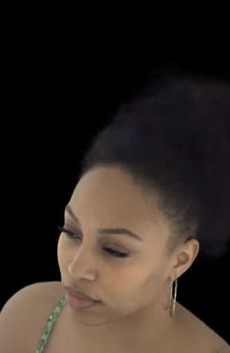
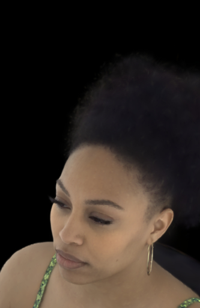
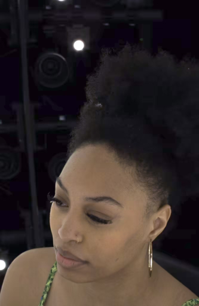
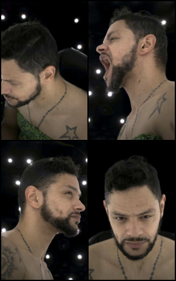
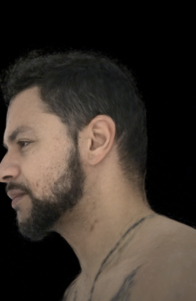
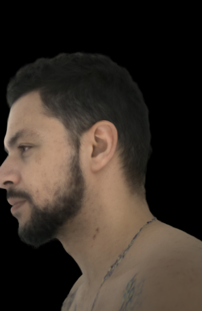
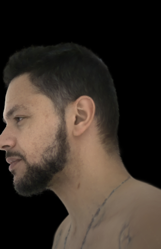
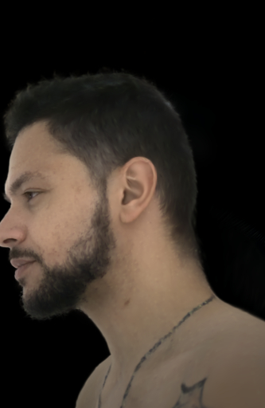
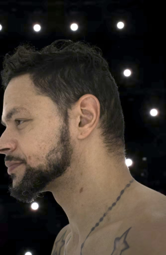
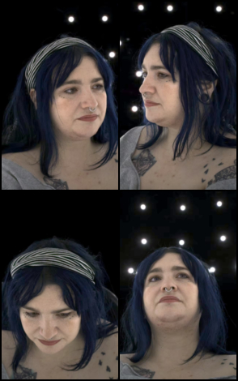
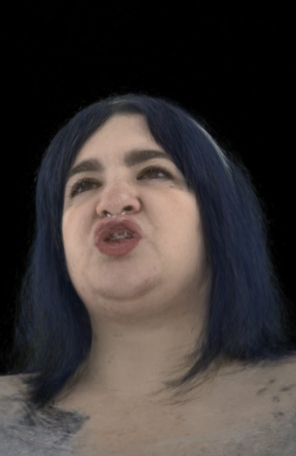
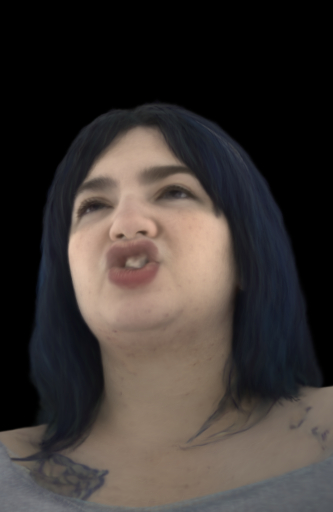
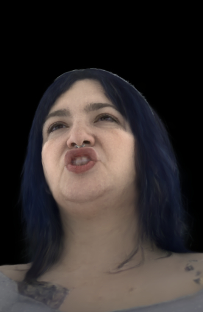
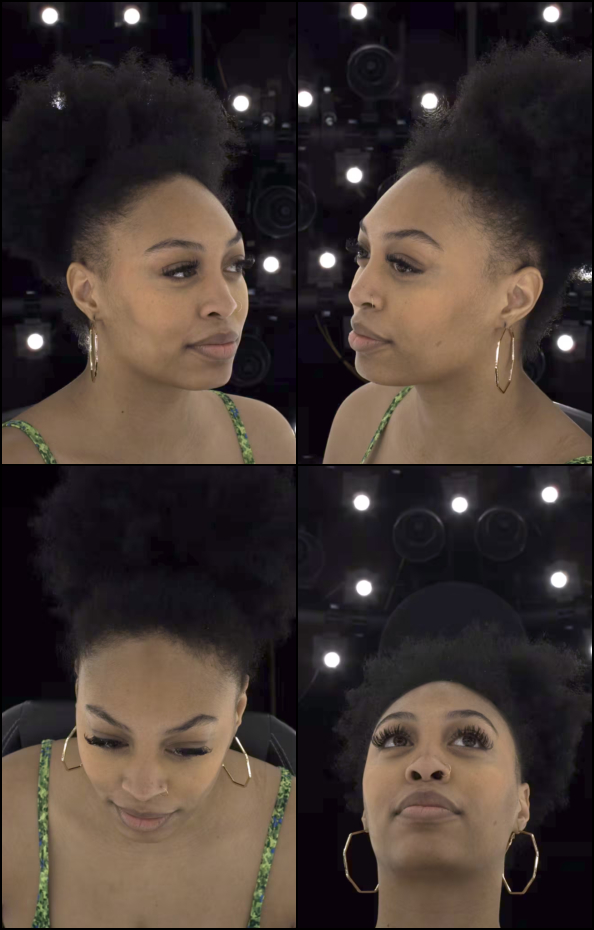
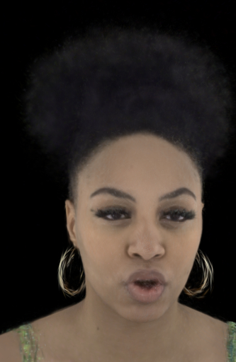
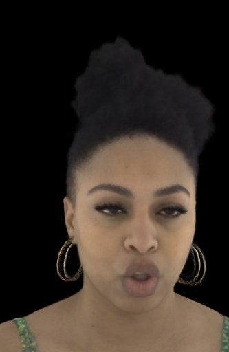
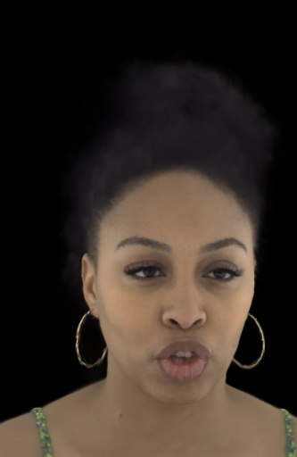
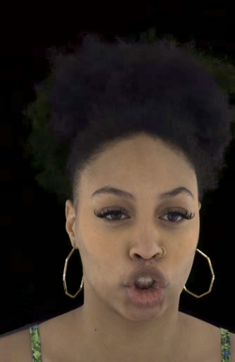
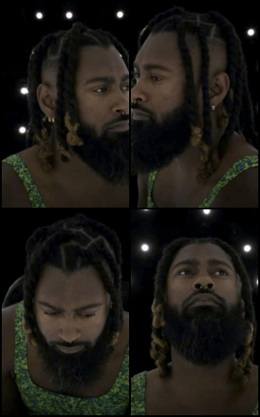
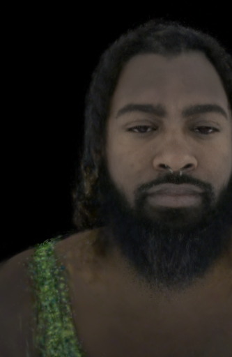
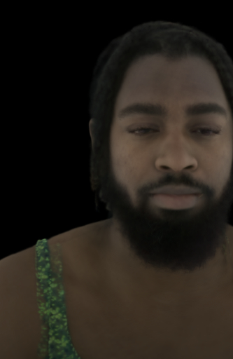
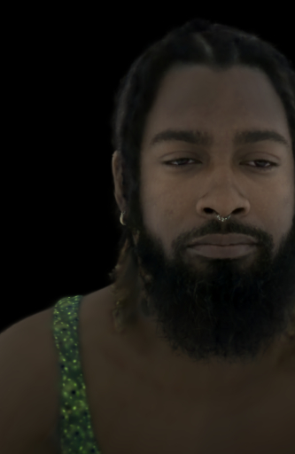
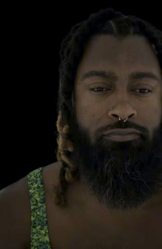
If you find this work useful, please cite us.
@article{benlalah2026gharp,
title={GHARP: Real-time Gaussian Head Animation from Large-scale Reconstruction Prior},
author={Benlalah, Ali and Johari, Sepehr and Vitoria, Patricia and Kappeler, Armin and Sevastopolsky, Artem and Jung, Alexander and Fanelli, Gabriele and Mader, Kevin and Breitenstein, Manuel and Pl{\"u}ss, Claudia and R{\"u}egg, Jan and Biland, Simon and Etterlin, Thomas and Kostiaev, Dmitry and Deschler, Mathias and Amberg, Brian and Martin, Sebastian},
journal={arXiv preprint arXiv:2610.10945},
year={2026},
url={https://arxiv.org/abs/2610.10945v1}
}